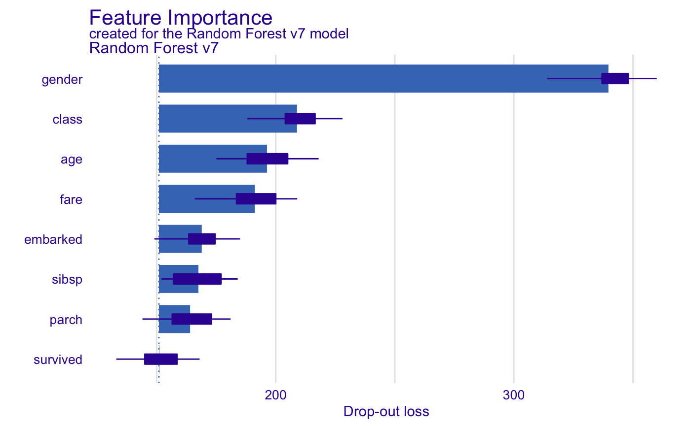
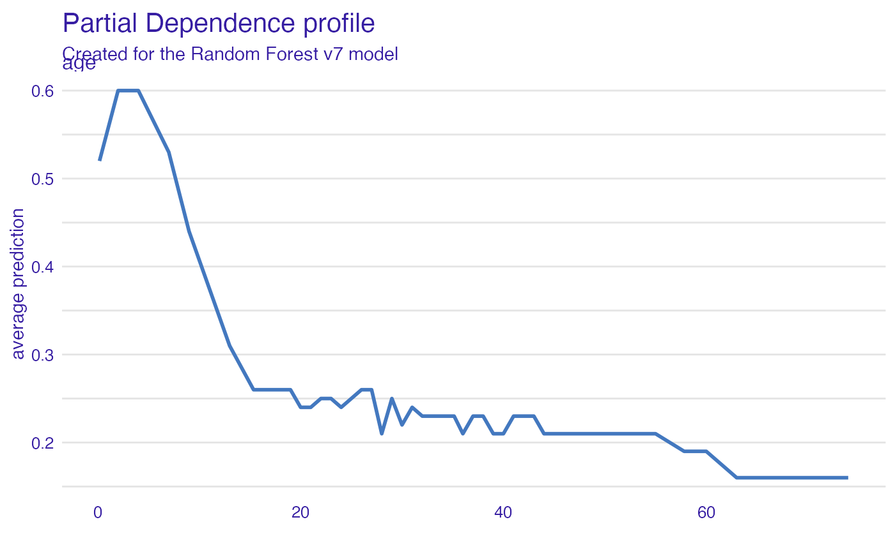
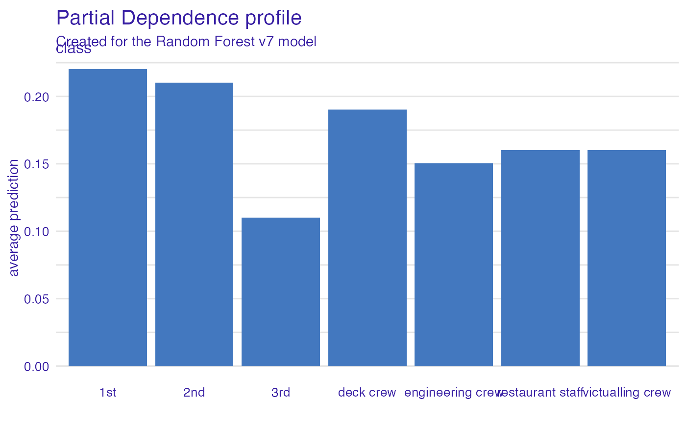
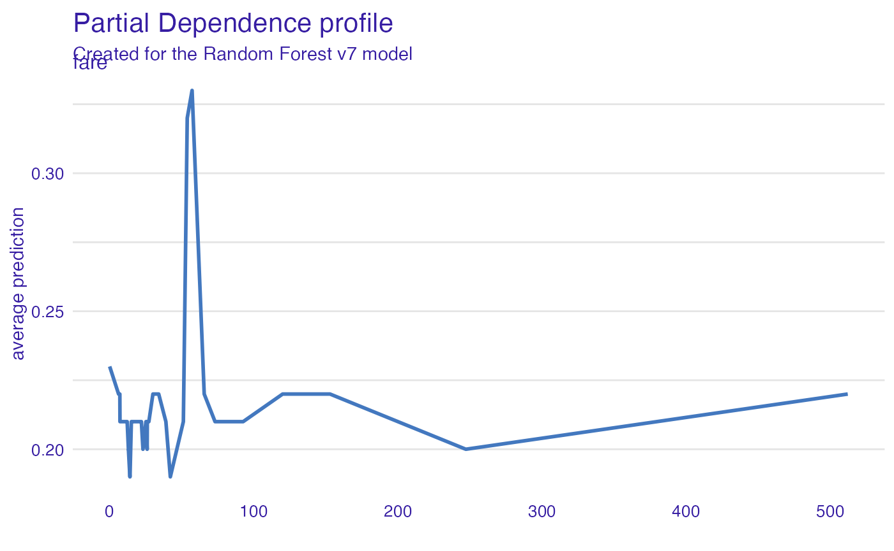
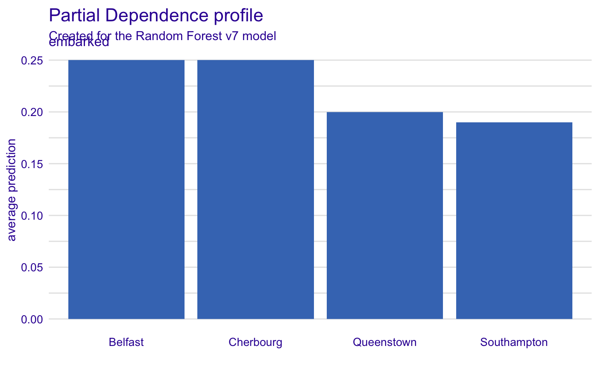
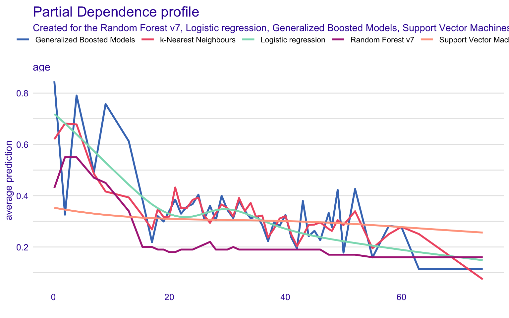
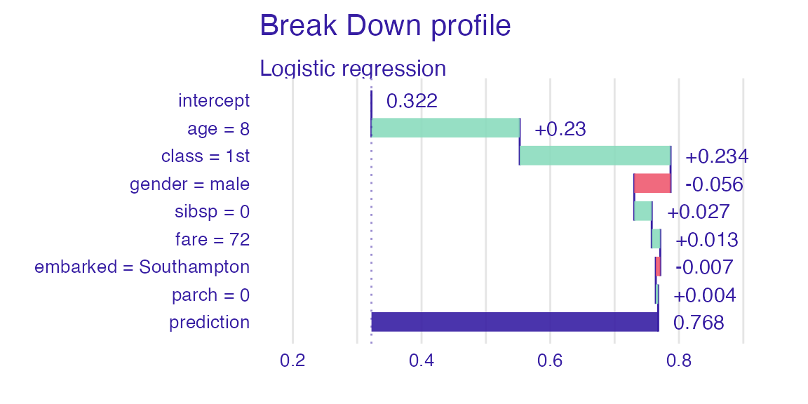
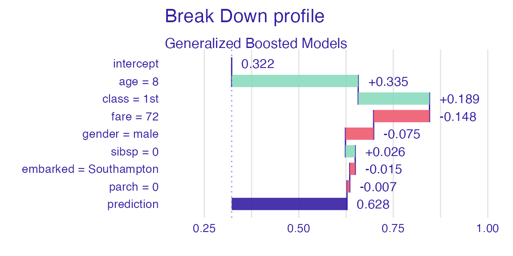
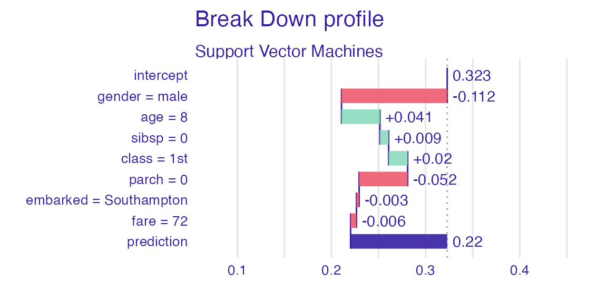
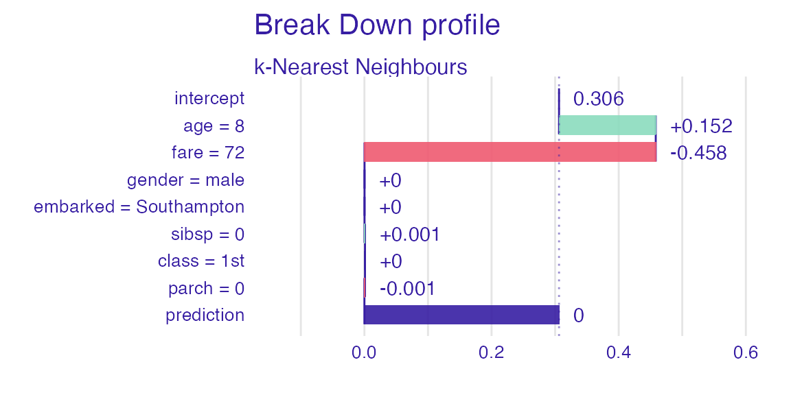

Survival on the RMS Titanic
Przemyslaw Biecek
2020-08-31
Source:vignettes/vignette_titanic.Rmd
vignette_titanic.RmdData for Titanic survival
Let’s see an example for DALEX package for classification models for the survival problem for Titanic dataset. Here we are using a dataset titanic avaliable in teh DALEX package. Note that this data was copied from the stablelearner package.
#> gender age class embarked fare sibsp parch survived
#> 1 male 42 3rd Southampton 7.11 0 0 0
#> 2 male 13 3rd Southampton 20.05 0 2 0
#> 3 male 16 3rd Southampton 20.05 1 1 0
#> 4 female 39 3rd Southampton 20.05 1 1 1
#> 5 female 16 3rd Southampton 7.13 0 0 1
#> 6 male 25 3rd Southampton 7.13 0 0 1Model for Titanic survival
Ok, not it’s time to create a model. Let’s use the Random Forest model.
# prepare model library("ranger") model_titanic_rf <- ranger(survived ~ gender + age + class + embarked + fare + sibsp + parch, data = titanic_imputed, classification = TRUE) model_titanic_rf
#> Ranger result
#>
#> Call:
#> ranger(survived ~ gender + age + class + embarked + fare + sibsp + parch, data = titanic_imputed, classification = TRUE)
#>
#> Type: Classification
#> Number of trees: 500
#> Sample size: 2207
#> Number of independent variables: 7
#> Mtry: 2
#> Target node size: 1
#> Variable importance mode: none
#> Splitrule: gini
#> OOB prediction error: 19.94 %Explainer for Titanic survival
The third step (it’s optional but useful) is to create a DALEX explainer for random forest model.
library("DALEX") explain_titanic_rf <- explain(model_titanic_rf, data = titanic_imputed, y = titanic_imputed$survived, label = "Random Forest v7", colorize = FALSE)
#> Preparation of a new explainer is initiated
#> -> model label : Random Forest v7
#> -> data : 2207 rows 8 cols
#> -> target variable : 2207 values
#> -> predict function : yhat.ranger will be used ( default )
#> -> predicted values : numerical, min = 0 , mean = 0.2111464 , max = 1
#> -> model_info : package ranger , ver. 0.12.1 , task classification ( default )
#> -> residual function : difference between y and yhat ( default )
#> -> residuals : numerical, min = -1 , mean = 0.1110104 , max = 1
#> A new explainer has been created!Variable importance plots
Use the variable_importance() explainer to present importance of particular features. Note that type = "difference" normalizes dropouts, and now they all start in 0.
vi_rf <- model_parts(explain_titanic_rf) head(vi_rf)
#> variable mean_dropout_loss label
#> 1 _full_model_ 0.2034216 Random Forest v7
#> 2 survived 0.2035319 Random Forest v7
#> 3 parch 0.2194207 Random Forest v7
#> 4 sibsp 0.2201275 Random Forest v7
#> 5 embarked 0.2243700 Random Forest v7
#> 6 fare 0.2515117 Random Forest v7plot(vi_rf)

Variable effects
As we see the most important feature is Sex. Next three importnat features are Pclass, Age and Fare. Let’s see the link between model response and these features.
Such univariate relation can be calculated with variable_effect().
Age
Kids 5 years old and younger have much higher survival probability.
vr_age <- model_profile(explain_titanic_rf, variables = "age") head(vr_age)
#> $cp_profiles
#> Top profiles :
#> gender age class embarked fare sibsp parch survived _yhat_
#> 1147 female 0.1666667 1st Cherbourg 134.1 1 1 1 1
#> 1147.1 female 2.0000000 1st Cherbourg 134.1 1 1 1 1
#> 1147.2 female 4.0000000 1st Cherbourg 134.1 1 1 1 1
#> 1147.3 female 7.0000000 1st Cherbourg 134.1 1 1 1 1
#> 1147.4 female 9.0000000 1st Cherbourg 134.1 1 1 1 1
#> 1147.5 female 13.0000000 1st Cherbourg 134.1 1 1 1 1
#> _vname_ _ids_ _label_
#> 1147 age 1147 Random Forest v7
#> 1147.1 age 1147 Random Forest v7
#> 1147.2 age 1147 Random Forest v7
#> 1147.3 age 1147 Random Forest v7
#> 1147.4 age 1147 Random Forest v7
#> 1147.5 age 1147 Random Forest v7
#>
#>
#> Top observations:
#> gender age class embarked fare sibsp parch survived _yhat_
#> 1147 female 39 1st Cherbourg 134.10 1 1 1 1
#> 1749 male 44 engineering crew Belfast 0.00 0 0 0 0
#> 1081 female 4 3rd Southampton 16.14 1 1 1 1
#> 1947 male 34 deck crew Belfast 0.00 0 0 1 1
#> 1577 male 37 victualling crew Belfast 0.00 0 0 1 0
#> 732 male 27 3rd Southampton 9.10 0 0 0 0
#> _label_ _ids_
#> 1147 Random Forest v7 1
#> 1749 Random Forest v7 2
#> 1081 Random Forest v7 3
#> 1947 Random Forest v7 4
#> 1577 Random Forest v7 5
#> 732 Random Forest v7 6
#>
#> $agr_profiles
#> Top profiles :
#> _vname_ _label_ _x_ _yhat_ _ids_
#> 1 age Random Forest v7 0.1666667 0.48 0
#> 2 age Random Forest v7 2.0000000 0.64 0
#> 3 age Random Forest v7 4.0000000 0.64 0
#> 4 age Random Forest v7 7.0000000 0.52 0
#> 5 age Random Forest v7 9.0000000 0.46 0
#> 6 age Random Forest v7 13.0000000 0.34 0
#>
#> $color
#> [1] "#4378bf"plot(vr_age)

Passanger class
Passangers in the first class have much higher survival probability.
vr_class <- model_profile(explain_titanic_rf, variables = "class") plot(vr_class)

Fare
Very cheap tickets are linked with lower chances.
vr_fare <- variable_profile(explain_titanic_rf, variables = "fare") plot(vr_fare)

Embarked
Passangers that embarked from C have highest survival.
vr_embarked <- model_profile(explain_titanic_rf, variables = "embarked") plot(vr_embarked)

Instance level explanations
Let’s see break down explanation for model predictions for 8 years old male from 1st class that embarked from port C.
new_passanger <- data.frame( class = factor("1st", levels = c("1st", "2nd", "3rd", "deck crew", "engineering crew", "restaurant staff", "victualling crew")), gender = factor("male", levels = c("female", "male")), age = 8, sibsp = 0, parch = 0, fare = 72, embarked = factor("Southampton", levels = c("Belfast", "Cherbourg", "Queenstown", "Southampton")) ) sp_rf <- predict_parts(explain_titanic_rf, new_passanger) plot(sp_rf)

It looks like the most important feature for this passenger is age and sex. After all his odds for survival are higher than for the average passenger. Mainly because of the young age and despite of being a male.
More models
Let’s train more models for survival.
Logistic regression
library("rms") model_titanic_lmr <- lrm(survived ~ class + gender + rcs(age) + sibsp + parch + fare + embarked, titanic_imputed) explain_titanic_lmr <- explain(model_titanic_lmr, data = titanic_imputed, y = titanic_imputed$survived, predict_function = function(m,x) predict(m, x, type = "fitted"), label = "Logistic regression")
#> Preparation of a new explainer is initiated
#> -> model label : Logistic regression
#> -> data : 2207 rows 8 cols
#> -> target variable : 2207 values
#> -> predict function : function(m, x) predict(m, x, type = "fitted")
#> -> predicted values : numerical, min = 0.002671631 , mean = 0.3221568 , max = 0.9845724
#> -> model_info : package rms , ver. 6.0.1 , task classification ( [33m default [39m )
#> -> residual function : difference between y and yhat ( [33m default [39m )
#> -> residuals : numerical, min = -0.9845724 , mean = -2.491758e-09 , max = 0.9715125
#> [32m A new explainer has been created! [39mGeneralized Boosted Models (GBM)
library("gbm") model_titanic_gbm <- gbm(survived ~ class + gender + age + sibsp + parch + fare + embarked, data = titanic_imputed, n.trees = 15000)
#> Distribution not specified, assuming bernoulli ...explain_titanic_gbm <- explain(model_titanic_gbm, data = titanic_imputed, y = titanic_imputed$survived, predict_function = function(m,x) predict(m, x, n.trees = 15000, type = "response"), label = "Generalized Boosted Models", colorize = FALSE)
#> Preparation of a new explainer is initiated
#> -> model label : Generalized Boosted Models
#> -> data : 2207 rows 8 cols
#> -> target variable : 2207 values
#> -> predict function : function(m, x) predict(m, x, n.trees = 15000, type = "response")
#> -> predicted values : numerical, min = 0.0005184853 , mean = 0.32053 , max = 0.9987435
#> -> model_info : package gbm , ver. 2.1.8 , task classification ( default )
#> -> residual function : difference between y and yhat ( default )
#> -> residuals : numerical, min = -0.9605918 , mean = 0.001626822 , max = 0.9916001
#> A new explainer has been created!Support Vector Machines (SVM)
library("e1071") model_titanic_svm <- svm(survived ~ class + gender + age + sibsp + parch + fare + embarked, data = titanic_imputed, type = "C-classification", probability = TRUE) explain_titanic_svm <- explain(model_titanic_svm, data = titanic_imputed, y = titanic_imputed$survived, label = "Support Vector Machines", colorize = FALSE)
#> Preparation of a new explainer is initiated
#> -> model label : Support Vector Machines
#> -> data : 2207 rows 8 cols
#> -> target variable : 2207 values
#> -> predict function : yhat.svm will be used ( default )
#> -> predicted values : numerical, min = 0.08767657 , mean = 0.323366 , max = 0.9623806
#> -> model_info : package e1071 , ver. 1.7.3 , task classification ( default )
#> -> residual function : difference between y and yhat ( default )
#> -> residuals : numerical, min = -0.8653572 , mean = -0.001209244 , max = 0.9123234
#> A new explainer has been created!k-Nearest Neighbours (kNN)
library("caret") model_titanic_knn <- knn3(survived ~ class + gender + age + sibsp + parch + fare + embarked, data = titanic_imputed, k = 5) explain_titanic_knn <- explain(model_titanic_knn, data = titanic_imputed, y = titanic_imputed$survived, predict_function = function(m,x) predict(m, x)[,2], label = "k-Nearest Neighbours", colorize = FALSE)
#> Preparation of a new explainer is initiated
#> -> model label : k-Nearest Neighbours
#> -> data : 2207 rows 8 cols
#> -> target variable : 2207 values
#> -> predict function : function(m, x) predict(m, x)[, 2]
#> -> predicted values : numerical, min = 0 , mean = 0.3061413 , max = 1
#> -> model_info : package Model of class: knn3 package unrecognized , ver. Unknown , task regression ( default )
#> -> residual function : difference between y and yhat ( default )
#> -> residuals : numerical, min = -0.8333333 , mean = 0.01601551 , max = 0.9285714
#> A new explainer has been created!Variable performance
vi_rf <- model_parts(explain_titanic_rf) vi_lmr <- model_parts(explain_titanic_lmr) vi_gbm <- model_parts(explain_titanic_gbm) vi_svm <- model_parts(explain_titanic_svm) vi_knn <- model_parts(explain_titanic_knn) plot(vi_rf, vi_lmr, vi_gbm, vi_svm, vi_knn, bar_width = 4)

Single variable
vr_age_rf <- model_profile(explain_titanic_rf, variables = "age") vr_age_lmr <- model_profile(explain_titanic_lmr, variables = "age") vr_age_gbm <- model_profile(explain_titanic_gbm, variables = "age") vr_age_svm <- model_profile(explain_titanic_svm, variables = "age") vr_age_knn <- model_profile(explain_titanic_knn, variables = "age") plot(vr_age_rf$agr_profiles, vr_age_lmr$agr_profiles, vr_age_gbm$agr_profiles, vr_age_svm$agr_profiles, vr_age_knn$agr_profiles)

Instance level explanations
sp_rf <- predict_parts(explain_titanic_rf, new_passanger) plot(sp_rf)

sp_lmr <- predict_parts(explain_titanic_lmr, new_passanger) plot(sp_lmr)

sp_gbm <- predict_parts(explain_titanic_gbm, new_passanger) plot(sp_gbm)

sp_svm <- predict_parts(explain_titanic_svm, new_passanger) plot(sp_svm)

sp_knn <- predict_parts(explain_titanic_knn, new_passanger) plot(sp_knn)

Session info
#> R version 4.0.2 (2020-06-22)
#> Platform: x86_64-apple-darwin17.0 (64-bit)
#> Running under: macOS Catalina 10.15.6
#>
#> Matrix products: default
#> BLAS: /Library/Frameworks/R.framework/Versions/4.0/Resources/lib/libRblas.dylib
#> LAPACK: /Library/Frameworks/R.framework/Versions/4.0/Resources/lib/libRlapack.dylib
#>
#> locale:
#> [1] en_US.UTF-8/en_US.UTF-8/en_US.UTF-8/C/en_US.UTF-8/en_US.UTF-8
#>
#> attached base packages:
#> [1] stats graphics grDevices utils datasets methods base
#>
#> other attached packages:
#> [1] caret_6.0-86 e1071_1.7-3 gbm_2.1.8 rms_6.0-1
#> [5] SparseM_1.78 Hmisc_4.4-1 ggplot2_3.3.2 Formula_1.2-3
#> [9] survival_3.1-12 lattice_0.20-41 ranger_0.12.1 DALEX_2.0
#>
#> loaded via a namespace (and not attached):
#> [1] foreach_1.5.0 splines_4.0.2 prodlim_2019.11.13
#> [4] assertthat_0.2.1 stats4_4.0.2 ingredients_1.3.1
#> [7] latticeExtra_0.6-29 yaml_2.2.1 ipred_0.9-9
#> [10] pillar_1.4.6 backports_1.1.9 quantreg_5.61
#> [13] glue_1.4.2 pROC_1.16.2 digest_0.6.25
#> [16] RColorBrewer_1.1-2 checkmate_2.0.0 recipes_0.1.13
#> [19] colorspace_1.4-1 sandwich_2.5-1 plyr_1.8.6
#> [22] htmltools_0.5.0 Matrix_1.2-18 timeDate_3043.102
#> [25] conquer_1.0.2 pkgconfig_2.0.3 purrr_0.3.4
#> [28] mvtnorm_1.1-1 scales_1.1.1 gower_0.2.2
#> [31] jpeg_0.1-8.1 lava_1.6.7 MatrixModels_0.4-1
#> [34] htmlTable_2.0.1 tibble_3.0.3 generics_0.0.2
#> [37] farver_2.0.3 ellipsis_0.3.1 TH.data_1.0-10
#> [40] withr_2.2.0 nnet_7.3-14 magrittr_1.5
#> [43] crayon_1.3.4 memoise_1.1.0 polspline_1.1.19
#> [46] evaluate_0.14 fs_1.5.0 nlme_3.1-148
#> [49] MASS_7.3-51.6 foreign_0.8-80 class_7.3-17
#> [52] tools_4.0.2 data.table_1.13.0 lifecycle_0.2.0
#> [55] matrixStats_0.56.0 multcomp_1.4-13 stringr_1.4.0
#> [58] munsell_0.5.0 cluster_2.1.0 compiler_4.0.2
#> [61] pkgdown_1.5.1 rlang_0.4.7 grid_4.0.2
#> [64] iterators_1.0.12 rstudioapi_0.11 htmlwidgets_1.5.1
#> [67] base64enc_0.1-3 labeling_0.3 rmarkdown_2.3
#> [70] ModelMetrics_1.2.2.2 gtable_0.3.0 codetools_0.2-16
#> [73] reshape2_1.4.4 R6_2.4.1 lubridate_1.7.9
#> [76] gridExtra_2.3 zoo_1.8-8 knitr_1.29
#> [79] dplyr_1.0.2 rprojroot_1.3-2 iBreakDown_1.3.1
#> [82] desc_1.2.0 stringi_1.4.6 Rcpp_1.0.5
#> [85] vctrs_0.3.4 rpart_4.1-15 png_0.1-7
#> [88] tidyselect_1.1.0 xfun_0.16